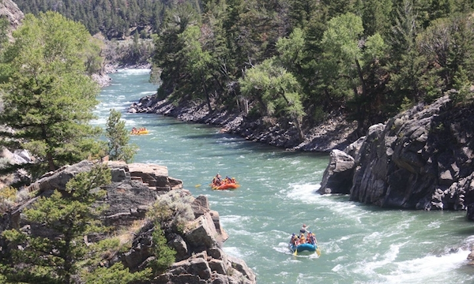
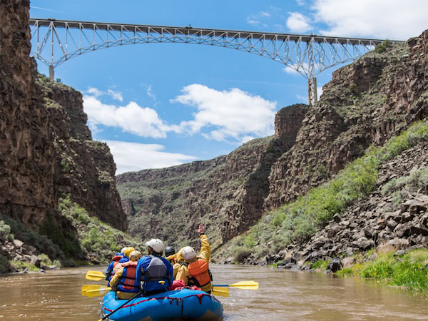
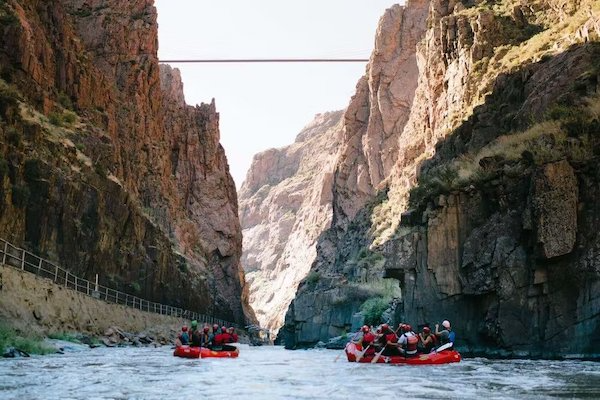

Whitewater Rafting Expeditions
Gardiner, MT
Go white water rafting on the Yellowstone River to float through the gorgeous Gallatin Range of the Rocky Mountains, with the chance to spot ospreys and Montana’s other native wildlife. Try out your paddling skills on a rafting trip, or go for the full wilderness experience, paddling a longer section of the Yellowstone River and spending the night at the edge of the water.
Taos, NM
Head to Taos for a white water rafting trip on the Rio Grande, then paddle the Narrows, Big Rock, and Souse Hole. Even if you endure the spinning whirlpools and eddies, leaving Taos might not be so easy—the entire town is said to be an “energy vortex” that’s rumored to exert a powerful pull on visitors.
Canon City, CO
There are more than 100 miles of rapids on the mighty Arkansas River, a river rafting hotspot that flows right past the mountain town of Canon City. With that much white water, there’s a lot to choose from while booking a river trip, and options range from the laid-back Bighorn Sheep Canyon to the more challenging Royal Gorge, whose towering canyon walls contain some hair-raising Class V rapids.
Are you ready for a new adventure?
| Destination | Duration | Price | Availability |
|---|---|---|---|
| Gardiner, Montana | 3 days | $1,500 | Yes |
| Taos, New Mexico | 3 days | $1,800 | No |
| Canon City, Colorado | 3 days | $1,650 | Yes |